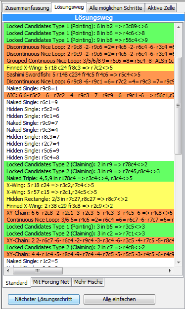
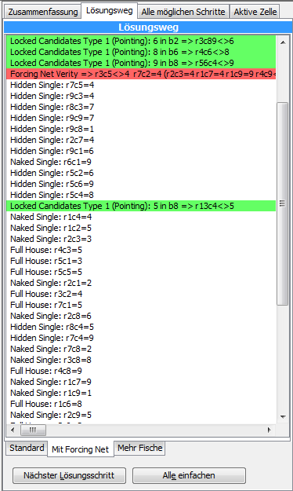
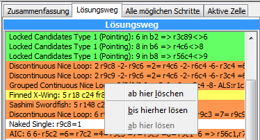
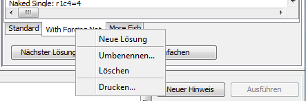
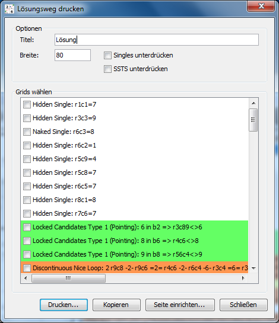

Kapitel 6: Mit Lösungswegen arbeiten
Inhaltsverzeichnis
- Einleitung
- Zu bestimmten Lösungsschritten springen
- Lösungswege ändern
- Lösungswege hinzufügen/löschen/umbenennen
- Lösungswege drucken
Einleitung
Eines der komplexesten Features von HoDoKu ist die Möglichkeit, gleichzeitig mit mehreren verschiedenen Lösungswegen für ein und dasselbe Sudoku zu arbeiten (und das macht auch ziemlich viel Spaß!). Die folgenden Screenshots zeigen zwei sehr unterschiedliche Lösungen für ein Sudoku:
 Beide Lösungen können unabhängig voneinander verwendet werden. Man kann mit einem einfachen Doppelklick zu einem beliebigen Schritt in jeder der beiden Lösungen springen, man kann Lösungen hinzufügen, verändern und löschen und wenn das Sudoku in eine Datei geschrieben wird, werden alle Lösungswege mit ihm abgespeichert.
Zu bestimmten Lösungsschritten springen
Hat man eine Lösung, kann man zu jedem Schritt springen, indem man ihn einfach doppelt anklickt oder indem man mit der rechten Maustaste das Kontextmenü aktiviert und "bis hierher lösen" anwählt.
Beide Methoden lösen das Sudoku bis zum Schritt vor dem angewählten Lösungsschritt und zeigen den gewählten Schritt im Sudoku an.
Das funktioniert sogar, wenn man mehr als eine Lösung hat: Zuerst muss man die Lösung wählen (den Reiter am Fuß der Liste klicken), das Sudoku ändert sich gemäß der letzten Auswahl in dieser Lösung. Anschließend kann man wie oben beschrieben einen Schritt aus dieser Lösung wählen.
Lösungswege ändern
Um eine Lösung zu ändern müssen drei separate Arbeitsschritte ausgeführt werden:
- Zuerst wählt man den Schritt, den man ersetzen will. Man aktiviert das Kontextmenü auf diesem Schritt und führt "ab hier löschen" aus. Der Schritt und alle nach ihm werden gelöscht, es wird ein "Unvollständig"-Schritt eingefügt und das Sudoku wird bis zu diesem neuen Schritt gelöst.
- Nun wechselt man zu "Alle möglichen Schritte" und drückt "Alle Lösungsschritte finden". Wenn man einen passenden Ersatz gefunden hat, wählt man ihn und drückt "Zur Lösung hinzufügen". Der neue Schritt wird vor "Unvollständig" eingefügt, aber nicht ausgeführt.
- Nun geht man zum Lösungsweg zurück und klickt doppelt auf "Unvollständig" (oder führt "ab hier lösen" aus). Die Lösung wird automatisch vervollständigt.
Es ist natürlich auch möglich, mehrere Schritte auf einmal zur Lösung hinzuzufügen, allerdings ist man selbst für die korrekte Synchronisation der beiden involvierten Ansichten verantwortlich. Vorgangsweise:
- Hat man gerade einen neuen Schritt eingefügt, ist er immer noch hervorgehoben. Nun drückt man "Ausführen" im Hinweis-Bereich
- Nun kann man wieder "Alle Lösungsschritte finden" ausführen, einen anderen Schritt hinzufügen und ausführen
- Der Vorgang wird so oft wie nötig wiederholt
Bitte beachten: Es ist möglich eine Batch-Lösung (mehrere Schritte für denselben Zustand des Sudokus auf einmal ausführen) zu simulieren, indem man mehrere Lösungsschritte aus demselben "Alle Lösungsschritte finden"-Lauf zur Lösung hinzufügt. Obwohl das Ergebnis korrekt sein wird, könnte die Anzeige einiger Schritte im Sudoku unvollständig und damit irreführend sein.
Lösungswege hinzufügen/löschen/umbenennen
Neue Lösungen können hinzugefügt werden, indem man das Kontext-Menü auf einem Reiter einer bestehenden Lösung aktiviert und "Neue Lösung" wählt.
Eine neue Lösung mit einem Standardnamen wird erzeugt, der Inhalt des Lösungsweges, für den das Kontext-Menü ausgeführt wurde, wird in die neue Lösung kopiert.
Um eine Lösung zu löschen, aktiviert man das Kontext-Menü für diese Lösung und wählt "Löschen".
Lösungswege können mit Hilfe des Kontextmenüs auch umbenannt werden.
Bitte beachten: Erzeugt man ein neues Sudoku, werden alle Lösungen für das alte Sudoku ohne Vorwarnung gelöscht. Will man die alten Lösungen nicht verlieren, muss man sie zuerst in eine Datei speichern.
Lösungswege drucken
Lösungswege können ausgedruckt oder in die Zwischenablage kopiert werden. Dazu muss "Drucken..." aus dem Kontextmenü gewählt werden.
Ein Dialog wird angezeigt, über den die Druckausgabe kontrolliert werden kann:
- Titel: Der Name des Lösungsweges
- Breite: Die Breite des Sudokus in [mm] (nur Druckausgabe)
- Singles unterdrücken: Wenn gewählt, werden aufeinanderfolgende Singles durch eine Zeile "Singles bis:" gefolgt vom Sudoku im Zustand nach dem letzten Single ersetzt
- SSTS unterdrücken: Gleich wie "Singles unterdrücken", aber alle SSTS-Techniken werden ersetzt
- Grids wählen: In der Liste werden alle Lösungsschritte angezeigt. Normalerweise werden die Lösungsschritte nur in Textform ausgegeben. Wird ein Lösungsschritt aber in der Liste angewählt, wird ein Bild des Sudoku im passenden Zustand und mit dem hervorgehobenen Schritt in die Ausgabe eingefügt
- Drucken...: Öffnet den Standard-Druckdialog und gibt den Lösungsweg auf dem ausgewählten Drucker aus
- Kopieren: Kopiert den Lösungsweg als Text in die Zwischenablage
- Seite einrichten...: Öffnet den Standarddialog des Betriebssystems für die Seiteneinrichtung
- Schließen: Schließt den Dialog
Copyright © 2008-12 von Bernhard Hobiger
Zuletzt geändert am 5. Mai 2025 von shorty#3746
(basierend auf dem 1to9only Github-Repo)
Alles Material auf dieser Site unterliegt der GNU FDLv1.3.